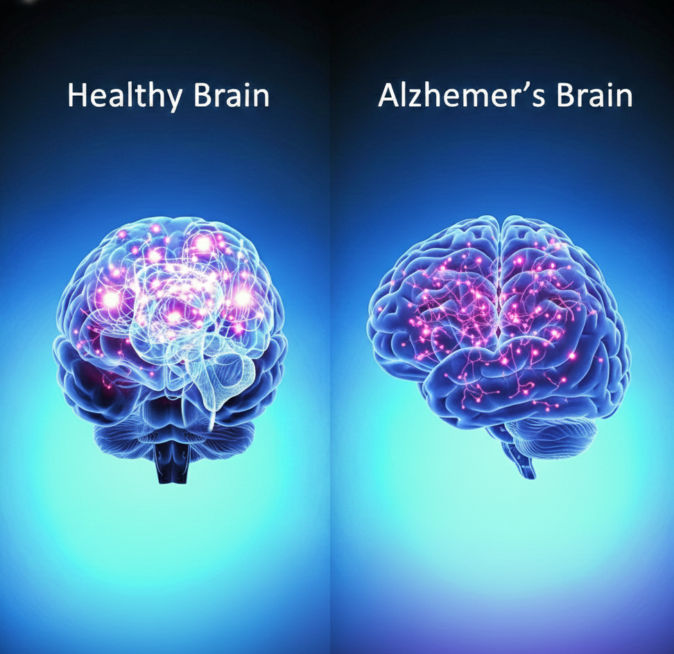

Understanding Alzheimer’s Disease
Alzheimer’s is a progressive neurological disorder that affects memory, thinking, and behavior. Early detection combined with lifestyle care can greatly slow cognitive decline.

How the Brain Changes
Alzheimer’s leads to shrinkage of key memory regions, buildup of amyloid plaques, and loss of neural connectivity. Brain imaging helps detect these early signs.
Care & Support
With medical guidance, cognitive training, emotional support, and lifestyle adjustments, individuals can maintain independence and quality of life for longer.

Early Symptoms
Subtle memory lapses, confusion, difficulty planning, and language challenges are common early indicators. Identifying these signs early improves treatment outcomes.